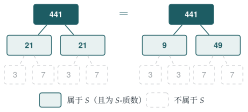

STEP I 2016，第 7 题
继续之前，请先阅读题目（原题为英文）。题目载于 STEP Support Programme 的题目资料库： step.maths.org/questions/16-s1-q7
引子
每个大于 \(1\) 的整数都可以写成质数（prime）的乘积，而且写法只有一种：\(60 = 2 \times 2 \times 3 \times 5\)，再没有别的写法。这个事实你大概已经用过无数次，熟悉得让人觉得显然成立，根本不用证明。
这道题构造了一个小小的数字世界，看上去完全合情合理，但在这个世界里，那个“显然”的事实却是错的。这是一道 STEP I 的题目，所用的数学并不艰深，但当中的教训却十分深刻。1847 年，一个著名的费马最后定理（Fermat’s Last Theorem）证明尝试，正是败在这个教训之上，而代数学的一个全新分支亦因此诞生。
动笔之前
列出 \(S\) 和 \(T\) 的首几个元素。按照第 (iv) 部分的定义，\(S\) 的哪些元素是\(S\)-质数？
\(S = \{1, 5, 9, 13, 17, 21, 25, 29, 33, \ldots\}\)，而 \(T = \{3, 7, 11, 15, 19, 23, \ldots\}\)。\(S\) 中的一个数如果不能写成 \(S\) 中较小元素（\(1\) 除外）的乘积，它就是 \(S\)-质数。留意 \(9\) 是 \(S\)-质数，尽管在普通整数中 \(9 = 3 \times 3\)，因为 \(3\) 并不在 \(S\) 之中。一个数是否“质数”，取决于你获准使用哪些数。
逐步解题
阶段 1 并集、交集与乘积
\(S \cup T\) 是所有正奇数组成的集合，即两者的并集（union），因为每个奇数除以 \(4\) 的余数不是 \(1\) 就是 \(3\)。\(S \cap T\) 是空集，即两者的交集（intersection）没有任何元素，因为没有一个数会有两个不同的余数。
\(S\) 的一般元素应该怎样写？两个这样的元素相乘，乘积是甚么？
\(S\) 的元素是 \(4a + 1\)，其中 \(a \geq 0\)，而 \[(4a+1)(4b+1) = 16ab + 4a + 4b + 1 = 4(4ab + a + b) + 1 \in S.\] 所以 \(S\) 在乘法下封闭（closed）。至于 \(T\)： \[(4a+3)(4b+3) = 16ab + 12a + 12b + 9 = 4(4ab + 3a + 3b + 2) + 1,\] 这个数属于 \(S\)，而不属于 \(T\)。例如 \(3 \times 7 = 21 \in S\)。所以 \(T\) 在乘法下并不封闭。
阶段 2 属于 \(T\) 的质因数
在 \(T\) 中取一个不是质数的数。它的质因数（prime factor）全是奇数。假如这些质因数全都属于 \(S\)，会有甚么后果？
这个数是奇数，所以它的质因数全是奇数，各自属于 \(S\) 或 \(T\)。假如它们全部属于 \(S\)，那么由于 \(S\) 在乘法下封闭，它们的乘积也会属于 \(S\)。但这个乘积就是我们原来的数，而它属于 \(T\)。所以至少有一个质因数属于 \(T\)。■
阶段 3 奇数个因数
把偶数个 \(T\) 的元素乘起来，乘积会落在哪里？奇数个又如何？
每一对 \(T\)-数相乘都得到一个 \(S\)-数，而 \(S\)-数相乘仍然是 \(S\)-数，所以偶数个 \(T\)-因数的乘积属于 \(S\)。奇数个的话，乘积就是（\(S\) 中的某个数）\(\times\)（\(T\) 的一个元素），用同类的计算可知它属于 \(T\)。
现在取 \(t \in T\)。如果 \(t\) 是 \(T\)-质数，那就完成了。否则，把 \(t\) 写成 \(T\) 的元素的乘积，其中每个元素都大于 \(1\)，因而小于 \(t\)。当中任何不是 \(T\)-质数的因数都可以再分解下去，如此类推。因数每次都变小，所以这个过程必会停止（这里再次用到良序性质（well-ordering）），最后 \(t\) 就写成了 \(T\)-质数的乘积。由于乘积属于 \(T\)，因数的个数必定是奇数。■
阶段 4 两种分解
在 \(S\) 中找一个数，它有两种真正不同的 \(S\)-质数分解。提示：利用像 \(9\) 这样的数，它们之所以是 \(S\)-质数，只因为它们在普通整数中的质因数并不在 \(S\) 之中。
\(S\)-质数依次为 \(5, 9, 13, 17, 21, 29, 33, 37, 41, 49, \ldots\)。\(21 = 3 \times 7\)、\(9 = 3 \times 3\) 和 \(49 = 7 \times 7\) 全都是 \(S\)-质数，因为 \(3\) 和 \(7\) 都不在 \(S\) 之中。而且 \[441 = 21 \times 21 = 9 \times 49.\] 这就是 \(441\) 的两种不同的 \(S\)-质数分解（图 1.7.1）。唯一分解（unique factorisation）在 \(S\) 中并不成立。■

回顾
是否“质数”取决于所在的系统。\(9\) 和 \(21\) 在整数中是合数（composite），在 \(S\) 中却是质数，因为分解它们所需的数并不存在。
封闭性很重要。\(S\) 在乘法下封闭；\(T\) 则不然。第 (iii) 和第 (iv) 部分的论证，全靠这一点分别。
显然的事实也可以是一条定理。整数的唯一分解是需要证明的。这道题说明了原因：在一个看上去非常相似的系统中，它并不成立。
背后的数学
整数有何特别之处
为甚么分解在普通整数中确实行得通？关键在于欧几里得引理（Euclid’s lemma）：如果质数 \(p\) 整除乘积 \(ab\)，那么 \(p\) 整除 \(a\) 或 \(p\) 整除 \(b\)。这条引理是用辗转相除法（Euclidean algorithm）证明的，而它正正是在 \(S\) 中失效的地方。在那里，\(S\)-质数 \(9\) 整除 \(21 \times 21 = 441\)（因为 \(441 = 9 \times 49\)），但 \(9\) 在 \(S\) 中并不整除 \(21\)。到了大学一年级，你会严谨地证明欧几里得引理，并看到唯一分解如何由它推导出来。
1847 年 3 月 1 日，拉梅（Gabriel Lamé）向巴黎科学院宣布，他已证明了费马最后定理。他的想法是利用复数单位根（roots of unity）把 \(x^n + y^n\) 分解， \[x^n + y^n = (x + y)(x + \zeta y)(x + \zeta^2 y) \cdots (x + \zeta^{n-1} y), \qquad \zeta = e^{2\pi \mathrm{i}/n}\] （其中 \(n\) 为奇数），然后就每个括号的质因数进行论证。刘维尔（Joseph Liouville）随即提出质疑：由 \(\zeta\) 构成的数，凭甚么一定有唯一分解？数星期后，人们才知道库默尔（Ernst Kummer）早已证明这类数往往没有唯一分解。最先失效的情况是 \(n = 23\)。
库默尔尽力补救，发明了“理想数”（ideal numbers），这些额外的对象能够恢复唯一分解，他并借此对一大类指数证明了费马最后定理。戴德金（Richard Dedekind）把库默尔的理想数发展成理想（ideal），成为近世代数的核心概念之一。
一个值得记住的较小例子
在数系 \(\mathbb{Z}[\sqrt{-5}] = \{a + b\sqrt{-5} : a, b \in \mathbb{Z}\}\) 中， \[6 = 2 \times 3 = (1 + \sqrt{-5})(1 - \sqrt{-5}),\] 而这四个因数在该数系中全都是“质数”（练习 3）。试把这个例子与 第 1.6 节 的高斯整数（Gaussian integers）比较，后者的分解确实是唯一的。这类数系之中哪些具有唯一分解，是一个很深刻的问题。高斯（Gauss）猜想，在形如 \(\mathbb{Z}[\sqrt{-d}]\) 的数系及与其相近的数系之中，只有九个具有唯一分解。这个猜想最终由黑格纳（Heegner）、贝克（Baker）和斯塔克（Stark）在 1952 年至 1967 年间证明。
思维技巧
当一个事实看来显然得不用证明时，问问它依赖甚么，并找出一个令它失效的情境。
构造反例（counterexample），也就是构造一个令“显然”的事实不成立的世界，是弄清一个证明真正需要甚么的最佳方法之一。大学本科代数有很大部分，就是在探问整数那些熟悉的性质，有哪些能在更一般的系统中保留下来。
延伸练习
另一个例子。证明 \(693\) 有两种不同的 \(S\)-质数分解。你能找出一个制造这类例子的通用方法吗？
偶数。设 \(E = \{2, 4, 6, 8, \ldots\}\)。哪些数是 \(E\)-质数？证明 \(60\) 有多于一种 \(E\)-质数分解。
\(\mathbb{Z}[\sqrt{-5}]\)。定义范数（norm）\(N(a + b\sqrt{-5}) = a^2 + 5b^2\)。证明 \(N(zw) = N(z)N(w)\)。先证明没有任何元素的范数是 \(2\) 或 \(3\)，由此推导出 \(2\)、\(3\) 和 \(1 \pm \sqrt{-5}\) 在 \(\mathbb{Z}[\sqrt{-5}]\) 中不能再分解。
欧几里得引理的应用。 较难 假设欧几里得引理成立（如果一个质数整除 \(ab\)，它就整除 \(a\) 或 \(b\)），证明每个大于 \(1\) 的整数都只有一种质数分解，因数的次序不计。
延伸阅读
Ian Stewart & David Tall, Algebraic Number Theory and Fermat’s Last Theorem（CRC Press）。开首几章讲述拉梅、库默尔与理想的故事，程度适合好学的大学一年级学生。
John Stillwell, Elements of Number Theory。把整数的唯一分解与高斯整数的唯一分解并列比较。
Harold Edwards, Fermat’s Last Theorem: A Genetic Introduction（Springer）。适合有志挑战的读者：循历史发展解说库默尔的工作。